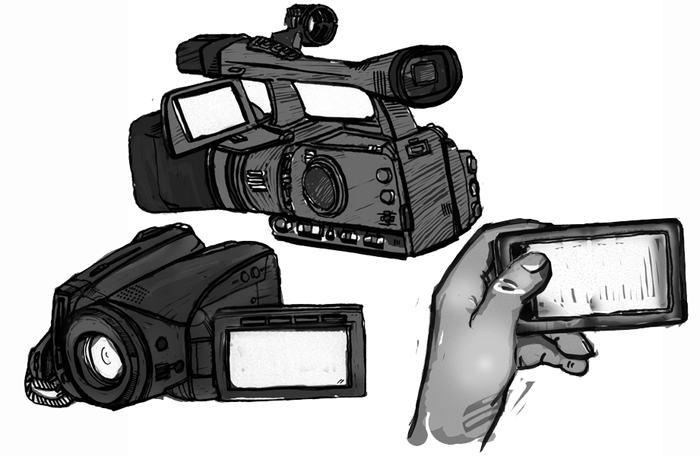
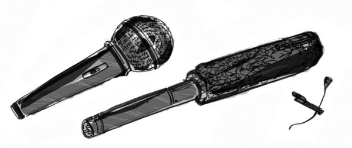
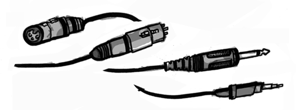

Videota kuvataan nykyään lähes yksinomaan digitaalimuodossa, ja erilaisia digivideokameroita löytyy kaikissa hintaluokissa. Myös joillakin hintavammilla kännyköillä sekä monilla digitaalisilla järjestelmäkameroilla voi kuvata korkealaatuista, jopa full HD-videokuvaa. Kuvan laatu ei tietenkään saa olla itseisarvo, vaan tärkeämpää on mitä, miten ja miksi kuvataan. Ja lisäksi hyvälaatuinen ääni on toimivan kokonaisuuden kannalta tärkeä. Voit siis yhtä hyvin käyttää vaikka isäsi vanhaa VHS-kameraa kuvauksiin - tällöin toki tarvitset tietokoneeseesi videokortin, jossa on analoginen audio/video-sisäänmeno.
Kameraa valitessa on käyttötarkoituksesta riippuen hyvä tarkistaa, että siinä on sisäänmeno ulkoiselle mikrofonille (miniplugi tai XLR), kuulokeliitäntä ja FireWire-ulostulo.
MiniDV-kamera on verrattain yleinen kameratyyppi ja siinä tallennusmediana on pieni MiniDV-nauha. Kuvausten jälkeen materiaali on kaapattava eli ajettava nauhalta tietokoneelle FireWire-kaapelia (IEEE 1394) pitkin, eli tarviset tietokoneeseesi FireWire-portin. (Huom! Halvimmissa MiniDV-kameroissa ei välttämättä ole DV-FireWire-ulostuloa: sellaista kameraa et voi siis käyttää kuvaamasi materiaalin kaappaamiseen.) Nauha itsessään on kätevä ja kenties kiintolevyä luotettavampi arkistointimuoto, vaikka ei ikuinen sekään.
Muistikortilliset ja kiintolevylliset digivideokamerat ovat ohittaneet suosiossa MiniDV-kameran. Niissä on usein suunnilleen samat toiminnot ja ominaisuudet kuin MiniDV-kameroissa, mutta niissä kuvattu video tallentuu suoraan kameran sdhc-kortille tai kiintolevylle tiedostoksi, jonka voi siirtää tietokoneelle suoraan USB-kaapelia pitkin. Näiden kameroiden suurin ongelma on, että videotiedostoformaatit vaihtelevat valtavasti kameran valmistajasta riippuen, eikä videoita välttämättä saa avattua leikkausohjelmassa ilman että niiden konvertoimiseen joutuu ensin uhraamaan aikaa ja vaivaa. Joka tapauksessa kannattaa kokeilla käytössä olevan kameran ja leikkausyksikön välistä yhteensopivuutta pienellä testivideolla, jotta mahdolliset ongelmat tulevat esiin ennen varsinaista tuotantoa.
Jotkut MiniDV-, muistikortti- ja kiintolevykamerat voivat tallentaa videota eri tarkkuuksilla. DV PAL -resoluutio (720x576 pikseliä) on riittävä tarkkuus televisiojulkaisuun. Useimmiten näissä kameroissa on valittavana perinteinen 4:3 -kuvasuhde sekä 16:9 (eli wide) -kuvasuhde, joka on nykyään yleisempi.
HDV -kameroissa (nauha tai kiintolevy) sekä AVCHD -kameroissa (muistikortti) on 16:9-kuvasuhteinen teräväpiirtoformaatti, jossa on 1280x720 tai 1440x1080 kuvapistettä. Tässä on siis enemmän pikseleitä mutta kuva on pakatumpi kuin DV PAL -muotoisena ja HD vaatii myös enemmän tehoja leikkauskoneelta, joten usein on järkevämpää pysyä DV PAL -formaatissa.
Mikrofoneja on useita erilaisia eri tarkoituksiin. Kameroissa on useimmiten sisäänrakennettu mikrofoni, joka ottaa hyvin yleisääntä tilasta, eli esimerkiksi liikenteen melun, taustamusiikin jne. Puheen tai tehosteäänten äänittämiseen tarvitset ulkoisen mikrofonin. Mikrofonien ominaisuuksiin vaikuttavat ennen kaikkea suuntakuviot. Haastattelumikrofoneissa on yleensä pallokuvio, eli ne ottavat ääntä kaikista suunnista tasaisesti. Haastattelumikrofoneja voi pitää kädessä ja käännellä vapaasti eri puhujia kohden, sillä haastattelumikrofonista ei tule juurikaan käsittelyääniä. Haastattelumikrofonia tulee pitää lähellä puhujan suuta.
Suuntaavassa mikrofonissa suuntakuvio suuntautuu mikrofonin päästä suoraan eteen päin. Tämä tarkoittaa, että suuntaavalla (eli haulikko-)mikrofonilla pitää osoittaa suoraan äänilähdettä kohti. Tämä mikrofoni sopii hyvin tehosteäänien, esimerkiksi oven pamahduksen äänittämiseen. Suuntaavalla mikrofonilla voi niin ikään äänittää puhetta, mutta silloin puhujan pitää puhua mikrofoniin suoraan edestä päin eikä esimerkiksi sivusta tai takaa. Suuntaavassa mikrofonissa on ulkona äänitettäessä hyvä olla tuulisuoja. Suuntaavaa mikrofonia ei myöskään kannata pitää kädessä, sillä käsittelyäänet kuuluvat äänityksessä kopauksina ja huminana. Suuntaavat mikrofonit on usein kiinnitetty kameraan tai puomiin tms. pidikkeeseen. Suuntaavaa mikrofonia ei tarvitse pitää yhtä lähellä äänilähdettä kuin haastattelumikrofonia.
Hyvä tapa äänittää puhetta on käyttää nappimikrofoneja. Nappimikrofoneja on langallisia ja langattomia. Niiden etuna on, että ne ottavat puheen tarkasti eli niillä voi äänittää meluisessakin paikassa. Lisäksi ne ovat kuvassa huomaamattomia. Nappimikrofoni pitää kiinnittää lähelle puhujan suuta, esim paitaan, rinnan yläpuolelle niin että mikrofoni osoittaa puhujan suuta. 
Mikrofonityyppejä: haastattelu-, suuntaava ja nappimikrofoni.
Mikrofoneissa on yleensä XLR-liitäntä. Parempilaatuisiin kameroihin saa kytkettyä suoraan XLR-piuhan, mutta pienempiin kameroihin mikrofonin saa kiinni yleensä 3,5 mm miniplug-in:llä. Tällaisessa tapauksessa mikrofonia ja kameraa yhdistää piuha jonka toisessa päässä on 3,5 mm miniplug-in uros ja toisessa XLR naaras. Kuvauksia suunnitellessasi ota huomioon, että useisiin kameroihin saa kiinni vain yhden mikrofonin kerralla. Näin ollen esimerkiksi haastattelutilanteissa, erityisesti jos tilanteessa on useampi puhuja, haastattelumikrofoni on paras vaihtoehto, koska silloin kaikki haastateltavat ja haastattelija voivat puhua samaan mikrofoniin. Haastattelussa esitetyt kysymykset ja vastaukset kannattaa aina äänittää samalla/samanlaisilla mikrofoneilla, sillä silloin ääniin tulee samanlainen akustiikka.

Vasemmalta oikealle: XLR-liittimen naaras- ja uroskappaleet, plugi, miniplugi.
Tarvitset videon leikkaamiseen tietokoneen, jossa on vähintään 600 MHz prosessori, 256 MB muistia ja 1 GB kovalevytilaa. Lisäksi koneessa on oltava näyttö, äänikortti ja kaiuttimet tai kuulokkeet.
Sujuvamman työskentelyn kannalta on toki hyvä, jos käytössäsi on vähän edellä mainittua tehokkaampi kone. Myös kiintolevytilaa tarvitset luultavasti nopeasti useamman gigatavun, mikäli työstät videota esimerkiksi DV-PAL -laatuisena - ja jos materiaalia on enemmän kuin muutama minuutti. Jos työstät videota esimerkiksi HDV -laatuisena, tarvitset jo huomattavasti tehokkaamman koneen.
Kone voi olla pöytäkone tai kannettava, ja jos siirrät materiaalia MiniDV-nauhalta, siinä pitää olla videokortti, jossa on FireWire-portti (IEEE 1394). Jos siirrät materiaalia analogisesta lähteestä - esimerkiksi VHS-nauhurista - tarvitset videokortin, joka muuntaa analogisen A/V-signaalin digitaaliseksi. Tällaisia esimerkiksi USB-porttiin kytkettäviä videokortteja saa melko edullisesti (noin 15 euroa).
There has been error in communication with Booktype server. Not sure right now where is the problem.
You should refresh this page.